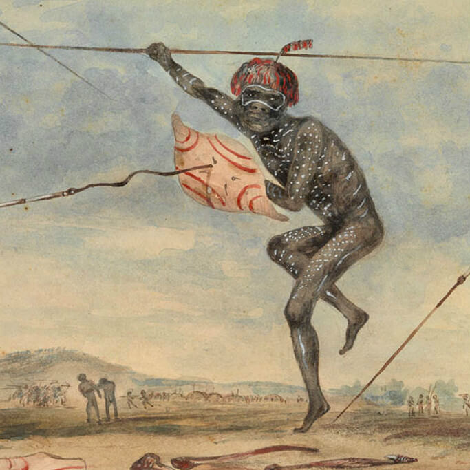

I went to see The Secret River last night - and returned from the experience underwhelmed. It tries to be a truthful depiction of one aspect of the 'frontier wars' and so it presents a bunch of Europeans setting up shop in an area that the local indigenes (surprise, surprise) also think is their land. The first half of the play helps you understand the white attachment to the land, introduces you to their own travails and so helps you understand why, when the going gets tough and they get scared, they will go to considerable lengths of brutality to hang onto the land.The biggest problem is that despite its attempt to provide 'nuance' (that newly fashionable concept), it can't escape from its essentially moralistic tone. We never get to really identify with anyone much. And, with no human content - nothing really to get your imagination into so you can relate to the people in the drama, the same old same old noble savages narrative seeps into everything - like battery acid.
And - as a related matter - there's my perennial costume drama problem. With a few exceptions, the depiction of virtually all the characters is that they're from somewhere this side of the 1990s but with old clothes on and a few linguistic foibles from a few centuries ago. The adults (particularly the mother) are pretty lovey-dovey with the kids - something that was rare enough when I was a kid, let alone from the refuse of the slums of London in the early 19th century. I made this observation at intermission, and in the next half one of the kids gets taken offstage for a belting. But that's kind of the problem. The playwright manages to write a belting into the play (with the mother stage-wincing throughout), but can't inhabit a world in which that wasn't a particularly notable occurrence.
Anyway, naturally enough, the characters in the play divide into representatives of two worlds - on the one side, civilisation is represented by some seriously bad eggs right down to OK(ish) people doing their best, though, in the end, fellow travellers with their tribe - and on the other Noble Savages. The noble savages are the indigenes, of course, but also the settling couple's two kids who play with the aborigines and also feature as the truly insightful and ethical ones. It is by no means impossible from the point of realism, but it is still a tad nauseating given the play's ideological overtones and intent. Jean Jacques Rousseau eat your heart out (and what a pity you wrote novels about the importance of looking after kids while you fathered one after the other each of which you refused to have anything further to do with - but I digress!)
A major theme is strangeness. But the play has the same approach to strangeness as the early Edna Everage had to education. She was all in favour of it - in moderation! We never see any violence from the indigenous men towards their women even though that was remarked upon by numerous first fleeters. None of them have permanent body markings - as I presume the original Eora tribe would have (though I might be wrong about that). And for the play there's not a single naked aboriginal. They're all in brown skin tone shorts and singlets. Of course the costumes are no big deal - and the set was very nicely done - but it's indicative of something deeper. We don't want anything upsetting the blue rinse.
One thing that immensely irritated me was the way in which the Europeans spoke to the uncomprehending aborigines in complete idiomatic sentences. None of them are made out to be particularly bright, and it's certainly true that it's almost impossible not to use your own language, but when you're trying to communicate with someone with literally none of your language, you'll simplify what you're saying down to single words. "Rock", "gun", "tree" that kind of thing. Instead while the aborigines seemed to be communicating in that way, the whites would just chat away with the aborigines saying things like "Here's some salted pork, you'll really enjoy it. You know what I mean?" Spare me.
In the absence of an arresting human story to which we can relate, the play became a 'nuanced' morality tale about a massacre of aborigines. That's a horrible stain on our history. The author has tried to help us understand it - but fails in my view because, though the edges of the moralism might be less clearly and stridently drawn, in the end the whole content is the moralism.
Art should be more than that. I can think of two ways it might have been more. One - I've already said would be to have characters to whom one could relate - with whom one could experience something of the dramatic nature of the unfolding events, the unfathomable strangeness and the terrible choices that were made. The other way would be by being a play of ideas. This was not that. And I think the best plays - at least for me are both these things - with both the ideas and the life of the characters reinforcing each other. I'm thinking of great plays like The Crucible and The One Day of the Year.
Is the book any better? I don't know, and without a lot of encouragement, I won't be reading it. But at least judging from the Goodreads reviews, the public reaction is the same as the play - generally rapturous (over three-quarters of the audience gave it a standing ovation last night) with a few less impressed folks. Here's what seems to be a well-judged, unfavourable review from the site that chimes with my own view of the play.
Glorialaihuang rated it ★★ (it was ok) This book was like a good piece of toast - you appreciate it and enjoy it while you're consuming it, but you know that you're going to forget about it afterwards. It's not that it isn't a good story, or that the writing isn't capable - it's more that I was never fully engaged by either. The story follows an English man who is caught stealing and has his sentence commuted to exile in Australia in the 19th century. In Australia, the man and his family struggle with setting up a new life, finding themselves in a brimming conflict with the natives who already live on the land. The historical fiction element was the most interesting - Grenville provides a fascinating depiction of life in the early English colonies. She is also skilled at creating detailed imagery - I could almost see the richness of the Australian landscape around me. There is nothing ostensibly wrong with the book, I just don't think it will stand out in my literary memory. The main character is an unlikable hero, indecisive, passive and cowardly, but with moments of integrity, and I couldn't help feeling that sometimes he was a metaphor for the book. The Secret River almost gets there, but doesn't quite stretch out of the parameters of being just another okay book.
I have not seen the play but have read the book. It may help if readers have some familiarity with the geography of the Hawkesbury. For example you can see how small land holdings backed by rugged sandstone escarpments are relatively sparse, but would have had appeal for early agriculture such as the maize cropping in the book. You can still see graveyards with the odd 'First Fleeters' headstone. But while this helps the reader with Grenville's fiction I prefer the non-fiction of Peter Read in 'Belonging' where he traces living memories of Indigenous life in the backwaters of Sydney's Cumberland Plane and northern sandstone country. But it still came as quite a shock to me when visiting the recently built Hawkesbury regional museum in old Windsor where the Hawkesbury melds upstream into the Nepean River and the much more expansive agricultural plain grows turf for suburban backyard makeovers....not a sign of the original inhabitants is displayed. Plenty on the pioneering lifestyle - expat Thames waterboatmen of Grenville's book notwithstanding. Somehow I expected more but perhaps I should not have been surprised.
Dunno about the play, but I agree the book was overrated - the characters in it, white and black, just seemed two dimensional to me. But I will say the book didn't seem to make the same mistake as the play obviously did of putting 21st century idioms into the mouths of early 19th century characters.
One of the things I always like about Coen brothers movies is that they never do this - their movies set in the past have people speaking as they did in the past (at least as far as we can judge). Both idioms and phonetics change much faster than most people think - even their latest one set in early 1950s Hollywood sounds slightly different to modern Californian. But then the Coen brothers are notoriously careful about spoken language generally.
I'm with you. Listen to recordings of John Curtin speaking - beyond the family resemblance the sounds are totally different to Australians today.
It's a bit spooky when it's the same person over time - as it is of pretty much any TV or radio announcer from the 60s to the 90s. So anglicised in the 1960s. That's understood today as anglicisation of the Australian accent, but to a substantial extent it was just how people thought 'proper' and 'polite' Australian sounded like.
Also, when I said 'idiomatic' I meant 19th century idiomatic. The point of what I was saying was that there's no chance of the aborigines understanding what was being said - and that was painfully obvious.